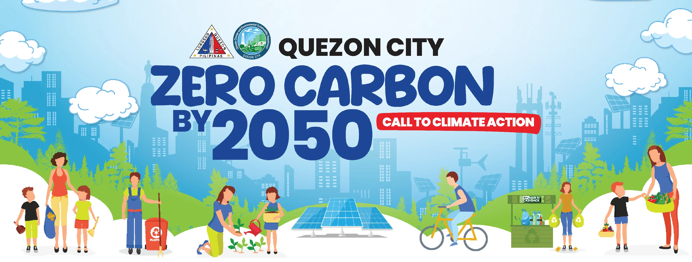

1
District 1
11 stations in 11 barangays
Bahay Toro · Project 6 · Balintawak · Santo Cristo · Bungad · Del Monte · West Triangle · San Jose · Sienna · NS Amoranto · Sto. Domingo
View districtQuezon City · Climate Change and Environmental Sustainability Department
The department leads Quezon City's climate action programme — monitoring air quality district by district, cutting emissions, and building a resilient, low-carbon city for every QCitizen.

Air quality
Every district has its own monitoring stations. Open a district for its published bulletin and station readings.
11 stations in 11 barangays
Bahay Toro · Project 6 · Balintawak · Santo Cristo · Bungad · Del Monte · West Triangle · San Jose · Sienna · NS Amoranto · Sto. Domingo
View district10 stations in 5 barangays
Payatas · Commonwealth · Bagong Silangan · Holy Spirit · Batasan Hills
View district11 stations in 11 barangays
Matandang Balara · Pansol · Quirino 2-B · Amihan · Silangan · Marilag · Socorro · San Roque · Libis · Camp Aguinaldo · Bagumbayan
View district11 stations in 11 barangays
Central · Krus na Ligas · Laging Handa · Paligsahan · Sacred Heart · Pinagkaisahan · Kalusugan · Doña Josefa · San Martin de Porres · Doña Imelda · Valencia
View district13 stations in 10 barangays
Pasong Putik · San Agustin · Kaligayahan · Greater Lagro · Nagkaisang Nayon · Novaliches Proper · Gulod · Fairview · North Fairview · San Bartolome
View district12 stations in 9 barangays
Sauyo · Talipapa · Tandang Sora · Pasong Tamo · Sangandaan · Baesa · Culiat · Balon Bato · New Era
View districtWhat we do
District-by-district PM2.5 readings from our monitoring stations, published every 24 hours for QCitizens.
Programmes that cut emissions across transport, waste, energy, and green spaces on the road to zero carbon by 2050.
Helping barangays, schools, and households prepare for heat, flooding, and the health impacts of poor air.
News & updates
Advisories, programmes, and climate action announcements.
Department announcements will appear here as soon as they are published from the admin console.
Daily air quality advisories and community programmes are posted on facebook.com/qc.climatechangedepartment.
Get in touch
Inquiries on air quality data, climate programmes, and partnerships are welcome.
Office address
City website
Zero Carbon by 2050
Quezon City Climate Change and Environmental Sustainability Department
About the department